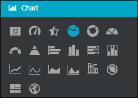
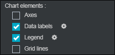
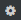
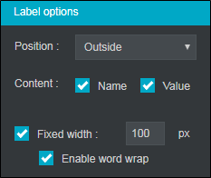
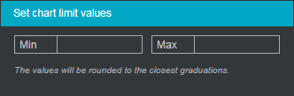
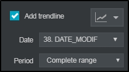
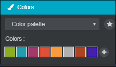
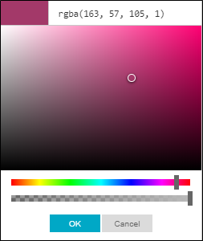

Charts
By default, a basic analysis appears as a graphic representation. In the options tab, chart category, it is possible to customize the type of chart you want.
Depending on the chosen chart model you can decide which values to display (percentages, count, etc.)

The chart elements, (charts presentation features), can be changed according to the type of chart you have chosen.
 AXES AND GRID LINES
AXES AND GRID LINES
In the case of a graph containing axes (bar chart or curve type), you can choose to display the axes and / or the grid lines.
 LEGEND AND DATA LABELS
LEGEND AND DATA LABELS
For all other types of graphs appear two other elements that are the legend and the data labels which display the values of the different modalities.
It is possible to modify the edition of the data labels and the legend.

Data labels
Select data labels, click the button

. You can choose different editing options. It is possible to select the label position, content, distance from the chart (only for pie and donut charts), and the width and to enable word wrap if the label width exceeds what’s fixed.

Legend
Select legend, click on . You can choose between the horizontal and vertical positioning of the legend, as well as the floating legend. This means that it will be superimposed on the graph since it will occupy the space of the entire window.

Once the legend is assigned, it is possible to delete the display of one or more modalities of the graph. For this you have to click on the legend modality that you don’t want to display and it will disappear from the graph.
DIAMETER, WIDTH AND HEIGHT
Depending on the chosen graph, it is possible to modify the diameter, the width and the height. To do so, proceed as follows:
-
Select your analysis.
-
Tick the box "Fixed diameter", "Fixed width" or "Fixed height" depending on the chart used.
-
Set the size in pixels.


 LIMIT VALUES
LIMIT VALUES
Check the set chart limit values box, and then click on  . You can then choose to put limit values on the graph to display a zone in a certain format.
. You can then choose to put limit values on the graph to display a zone in a certain format.

ADD A TRENDLINE
The option add trendline appears only in the case of indicator or gauge chart type.
It adds a trend line below the indicator to study the trend of datasets over a chosen period.
It is possible to select by which type of chart you want to display the trend, on which variable of time you want to base yourself and for which period of time.

MODIFY THE COLOR
In the case of a graphic rendering it is possible to change its color. 3 color options are available:
-
A color, with the choice to apply a gradient.
-
Two colors, with the choice to apply a gradient.
-
Color palette. There are predefined themes of color palettes that you will find by selecting .
A new color can be added by selecting . It is also possible to delete an existing color by clicking on the small cross at the top right of the window .

In the color zone, it’s possible to modify a color by selecting it and by moving the cursor on the palette that appears or by entering its RGB code.
